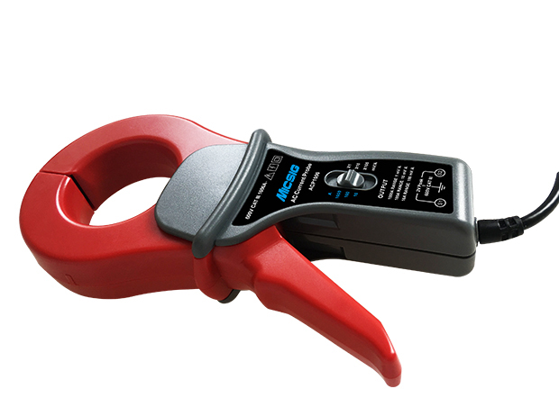
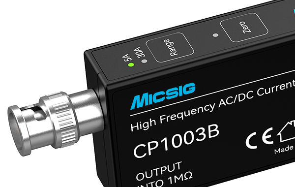
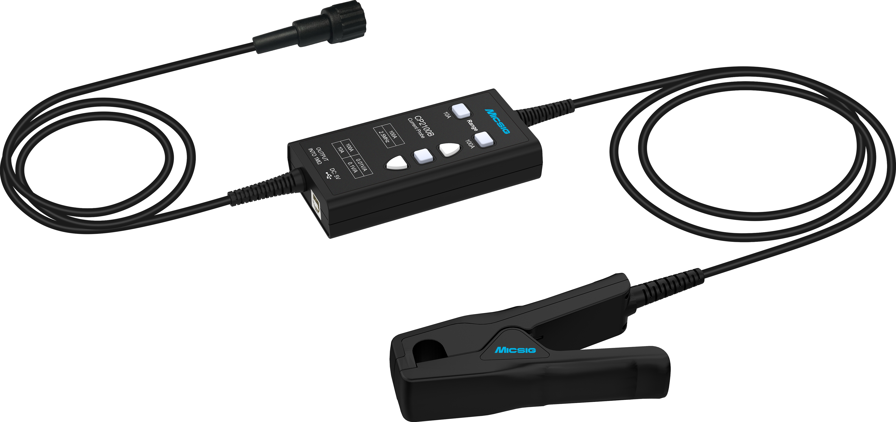
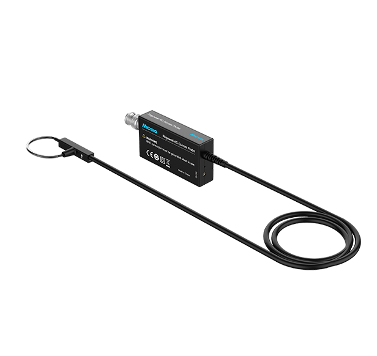

An oscilloscope current probe converts a current signal into a waveform that the oscilloscope can display. When choosing a current probe for an oscilloscope, match the model to AC or AC/DC measurement, peak and RMS current, bandwidth, conductor access, interface and power requirements. Micsig current-probe families cover different combinations, so confirm the exact model in its datasheet.
Choose a Micsig current probe family

ACP1000 AC Current Probe
Clamp-style AC measurement from 0.1 A to 1000 A, with selectable 10 A, 100 A and 1000 A ranges. Datasheet lists 10 Hz–100 kHz bandwidth and a 52 mm maximum conductor diameter.
ACP1000 details → ·
Product brochure PDF
CP High-Frequency AC/DC Current Probes
Multiple models for low-current detail and higher-current transient testing. The family spans up to 150 MHz bandwidth and up to 500 A RMS across different models.
CP Series details → ·
Product introduction PDF
CP2100 Low-Frequency AC/DC Probe
USB-powered current probe family with 10 A and 100 A ranges, up to 100 Apk measurement, and bandwidth up to 2.5 MHz on CP2100B.
CP2100 details → ·
Product brochure PDF
RCP Rogowski AC Current Probes
Flexible coil options for AC current measurement from 60 Apk to 12000 Apk, with model-dependent bandwidth up to 30 MHz.
Rogowski coil probe guide → ·
RCP Series details → ·
Product brochure PDF
How to choose a current probe for an oscilloscope
Start with what you need to measure: ACP1000 is an AC clamp probe; CP and CP2100 families include AC/DC models; RCP is a flexible Rogowski AC current probe. Then compare the expected waveform frequency, current range, jaw or coil size, oscilloscope input impedance and any external power requirement. A BNC connector alone does not confirm that every probe works with every setup.
For example, Micsig’s RCP instructions specify a 1 MΩ oscilloscope input and the supplied 12 V power adapter for the probe module. Check the exact model manual for connection and safety instructions before use. Read the Micsig RCP user manual →
Compare Micsig oscilloscopes in India →
Compare Micsig current probe families
| Family | Measurement type | Published family range | Typical selection reason |
|---|
| ACP1000 | AC | 0.1–1000 A; 10 Hz–100 kHz | Clamp-on measurements at higher AC current |
| CP Series | AC/DC | Up to 500 A RMS; up to 150 MHz | High-frequency waveform or transient analysis |
| CP2100 | AC/DC | Up to 100 Apk; DC–2.5 MHz | Low-frequency and DC current work |
| RCP Series | AC Rogowski | 60–12000 Apk; up to 30 MHz | Flexible coil access and high peak current |
Ranges vary by model. Confirm bandwidth, current range, jaw/coil dimensions, safety category and compatibility in the product PDF before ordering.
Applications for current waveform measurement
Micsig current probes are listed for applications including motor drives and inverters, power conversion, switching supplies, semiconductor switching tests, power quality measurements, and AC current monitoring. Match the probe’s bandwidth and range to the signal and the circuit under test.
Current probe for oscilloscope FAQs
What does a current probe do with an oscilloscope?
It measures current and provides an output signal the oscilloscope can display. Confirm the probe output, oscilloscope input impedance and probe power method for the selected model.
Which Micsig current probes measure AC and DC?
The CP and CP2100 families include AC/DC models. The ACP1000 is specified for AC current, and the RCP Rogowski family is for AC current. Check each model datasheet for its range and frequency limits.
How do I match a current probe to an oscilloscope?
Check the output connector, input impedance, required power, measurement range and bandwidth against the oscilloscope and signal. Follow the exact model manual.
Current probe enquiries in India
Share the signal type (AC or AC/DC), expected current, frequency content, conductor size and oscilloscope model. Vianova Industrial Solutions can help identify which Micsig current-probe datasheet and model family to review.